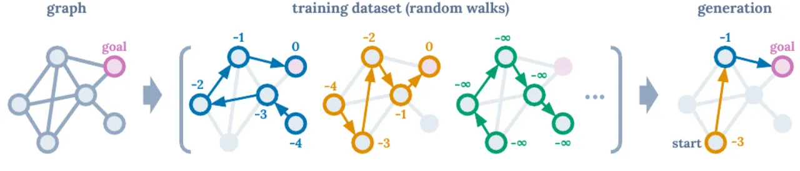
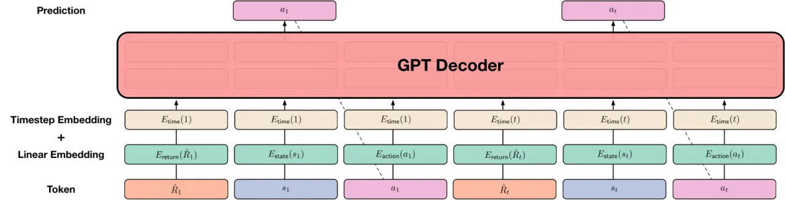
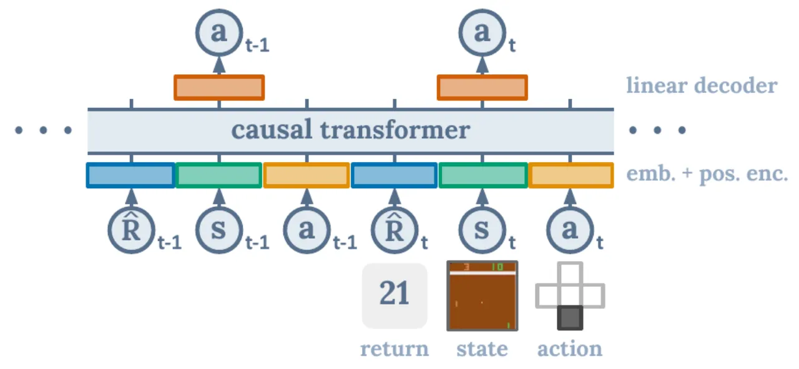
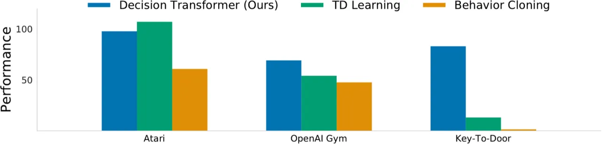
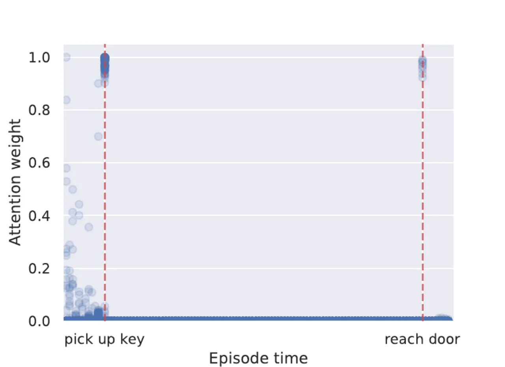

Decision Transformer 将强化学习（RL）彻底重新表述为条件序列生成问题：给定期望的 return-to-go（未来累积奖励），用 GPT 风格的 Transformer 自回归地预测动作——完全绕过 TD 学习与动态规划，仅凭序列建模就能在 Atari、D4RL/OpenAI Gym 和稀疏奖励任务上匹敌甚至超越最先进的离线 RL 算法。
传统 RL 依赖时序差分（TD）学习进行长程信用分配（credit assignment），存在"deadly triad"（函数近似 + bootstrapping + 离策略）带来的不稳定性，且需要折扣因子，容易导致短视行为。 本文探索一个根本性的范式转移：能否用 Transformer 的序列建模能力直接替代传统 RL 算法？
"Instead of training a policy through conventional RL algorithms like temporal difference (TD) learning, we will train transformer models on collected experience using a sequence modeling objective. This will allow us to bypass the need for bootstrapping for long term credit assignment — thereby avoiding one of the 'deadly triad' known to destabilize RL."

Decision Transformer 在思想上与 Upside-Down RL 一脉相承：两者都通过条件期望回报来驱动动作生成，而非显式优化值函数。 核心区别在于 DT 使用 GPT 风格的因果 Transformer，将 return-to-go、状态、动作显式组织为长序列 token，借助 self-attention 直接完成长程信用分配； Upside-Down RL 则通常用更简单的前馈网络将"命令"（目标回报）与状态拼接后预测动作，缺乏长上下文建模能力。
Decision Transformer 的核心思想极为简洁：将轨迹表示为 (R̂₁, s₁, a₁, R̂₂, s₂, a₂, …, R̂ₜ, sₜ, aₜ) 的 token 序列，
用 GPT（因果 Transformer）自回归地预测动作——其中 R̂ₜ 为 return-to-go（当前时刻到终止的累积奖励之和），
既作为"目标"约束策略行为，也替代了传统 RL 中对折扣回报的 bootstrapping。

将原始奖励替换为 return-to-go：R̂ₜ = Σ_{t'=t}^{T} rₜ'。
这样模型学习的是"若未来总回报为 R̂，当前应采取什么动作"，而非被动拟合过去奖励。
每次执行动作后，将目标 return 减去实际获得的奖励，动态更新下一步的 R̂ 条件。
每步输入最近 K 个时间步，共 3K 个 token：
训练阶段：在离线轨迹数据集上随机采样长度为 K 的片段，仅优化 action 预测损失（论文发现同时预测 state 或 return-to-go 并不提升性能）。 推理阶段：以目标 return（如专家级别）作为初始条件，通过自回归采样生成动作序列；每执行一步后，将 R̂ 减去实际奖励，循环直至终止。

在三大离线 RL 基准上评估：Atari（高维视觉输入，需长程信用分配）、D4RL/OpenAI Gym（连续控制，MuJoCo 仿真）、Key-to-Door（稀疏奖励，极端长程信用分配）。 主要对比方法：Conservative Q-Learning（CQL，TD 学习的 SOTA）、行为克隆（BC）、BEAR、BRAC、AWR。

使用 DQN-replay 数据集的 1%（约 50 万条轨迹）训练，以专业玩家为 100 分进行归一化。 上下文长度 K=30（Pong 用 K=50）。
| 游戏 | DT（本文） | CQL | QR-DQN | REM | BC |
|---|---|---|---|---|---|
| Breakout | 267.5 ± 97.5 | 211.1 | 17.1 | 8.9 | 138.9 ± 61.7 |
| Qbert | 15.4 ± 11.4 | 104.2 | 0.0 | 0.0 | 17.3 ± 14.7 |
| Pong | 106.1 ± 8.1 | 111.9 | 18.0 | 0.5 | 85.2 ± 20.0 |
| Seaquest | 2.5 ± 0.4 | 1.7 | 0.4 | 0.7 | 2.1 ± 0.3 |
均值 ± 标准差（3 seeds）。论文原数据，Table 1。
评估 HalfCheetah、Hopper、Walker 及 Reacher 在 Medium、Medium-Replay、Medium-Expert 三种数据集上的表现。得分归一化（100 = 专家策略）。
| 数据集 | 环境 | DT（本文） | CQL | BEAR | BRAC-v | BC |
|---|---|---|---|---|---|---|
| Medium-Expert | HalfCheetah | 86.8 ± 1.3 | 62.4 | 53.4 | 41.9 | 59.9 |
| Medium-Expert | Hopper | 107.6 ± 1.8 | 111.0 | 96.3 | 0.8 | 79.6 |
| Medium-Expert | Walker | 108.1 ± 0.2 | 98.7 | 40.1 | 81.6 | 36.6 |
| Medium | HalfCheetah | 42.6 ± 0.1 | 44.4 | 41.7 | 46.3 | 43.1 |
| Medium | Hopper | 67.6 ± 1.0 | 58.0 | 52.1 | 31.1 | 63.9 |
| Medium | Walker | 74.0 ± 1.4 | 79.2 | 59.1 | 81.1 | 77.3 |
| Medium-Replay | HalfCheetah | 36.6 ± 0.8 | 46.2 | 38.6 | 47.7 | 4.3 |
| Medium-Replay | Hopper | 82.7 ± 7.0 | 48.6 | 33.7 | 0.6 | 27.6 |
| Medium-Replay | Walker | 66.6 ± 3.0 | 26.7 | 19.2 | 0.9 | 36.9 |
| Average（不含 Reacher） | 74.7 | 63.9 | 48.2 | 36.9 | 46.4 | |
论文原数据，Table 2。"Decision Transformer (DT) outperforms conventional RL algorithms on almost all tasks."
三阶段网格环境：拾取钥匙（阶段一）→空房间（阶段二）→到达门（阶段三）。只有拾取钥匙后到达门才能获得二值奖励。 训练数据全为随机游走轨迹，评估成功率（3 seeds）。
| 数据集 | DT（本文） | CQL | BC | %BC | Random |
|---|---|---|---|---|---|
| 1K 随机轨迹 | 71.8% | 13.1% | 1.4% | 69.9% | 3.1% |
| 10K 随机轨迹 | 94.6% | 13.3% | 1.6% | 95.1% | 3.1% |
"Methods using hindsight (Decision Transformer, %BC) can learn successful policies, while TD learning struggles to perform credit assignment."（Table 4）
对比 K=1（无历史）与标准 K（K=30 或 K=50）。实验表明长上下文对性能至关重要，尤其在 Breakout（267.5 vs 73.9）和 Pong（106.1 vs 2.5）上差异显著。 论文假设：在建模策略分布时，上下文帮助 Transformer 识别轨迹来自哪类策略，从而实现更好的学习与生成。

在 D4RL Hopper 的延迟奖励设置下（所有中间奖励为 0，仅终止时给出累积奖励），CQL 性能崩溃（Medium-Expert: 111.0 → 9.0）， 而 Decision Transformer 几乎不受影响（107.6 → 107.3 ± 3.5）。这证明 DT 对奖励稀疏性天然具有鲁棒性。
测试时需要指定合理的目标 return-to-go 初始值。若目标设置过高（超出数据分布）或不合理， 模型可能生成低质量动作。论文提到"conditioning on return distributions to model stochastic settings instead of deterministic returns"是未来值得研究的方向。
本文仅研究了离线 RL 场景，未扩展至在线 RL。论文指出"Decision Transformer can meaningfully improve online RL methods by serving as a strong model for behavior generation"，但这仅为展望而非实验验证。
Decision Transformer 本质是监督学习：它能复现数据集中高回报轨迹对应的行为，但无法通过优化学到的价值函数 来发现超出数据集的更优策略（Qbert 上明显落后于 CQL，104.2 vs 15.4，印证了这一点）。 TD 方法在数据质量高、状态覆盖好的任务上仍有优势。
Transformer 的 self-attention 复杂度为 O(K²)（K = 上下文时间步数）。在需要超长上下文（如 Key-to-Door 使用整集长度作为上下文）的任务中， 计算和内存开销显著增大，限制了在超长时程任务上的扩展能力。
论文明确提出："reward design by nefarious actors can potentially generate unintended behaviors as our model generates behaviors by conditioning on desired returns." 训练数据的来源与质量直接决定生成行为的安全性，存在被恶意设计的数据或奖励函数所利用的风险。